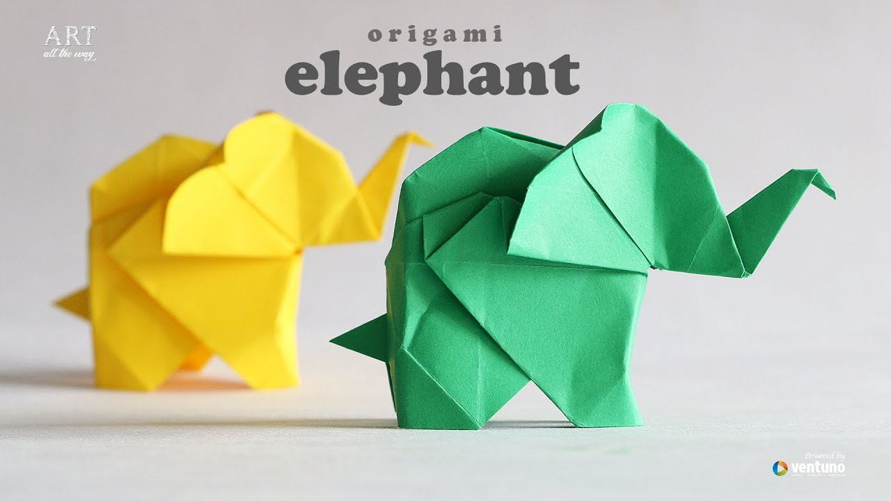
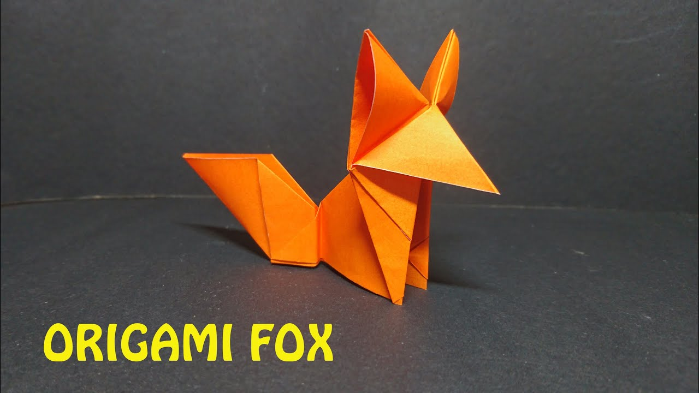

Origami Designs
About Us
Follow Us

Interesting Facts about Fishes
- THERE ARE OVER 30,000 DIFFERENT SPECIES OF FISH.
- JELLYFISH, STARFISH AND CRAYFISH AREN’T REALLY FISH.
- FISH TALK TO EACH OTHER.
- FISH ARE COLD BLOODED.

Interesting Facts about Elephants
- At birth, a baby elephants weigh 210 lbs (or 95kg).
- African elephants are smaller at birth than Asian elephants but are much bigger as adults.
- The trunk is an incredibly useful, dexterous and clever appendage.
- Their trunks are pretty incredible and elephants have an amazing sense of smell, but their eyesight isn’t great.
- All those mud baths that elephants take? That is because elephants actually have very sensitive skin
Interesting Facts about Rabbits
- THEY CAN'T LIVE OFF CARROTS.
- SOME RABBITS ARE AS BIG AS A TODDLER.
- BABY RABBITS ARE CALLED KITTENS.
- RABBITS GROOM THEMSELVES LIKE CATS DO.
- THEIR VISION COVERS NEARLY 360 DEGREES.
- THEIR EARS HELP THEM STAY COOL.

Interesting Facts about Fox
Foxes are more like cats than dogs
Foxes live in underground dens
Foxes make 40 different sounds
Foxes have impeccable hearing
There are two types of foxes in the Carolinas
Foxes are extremely playful